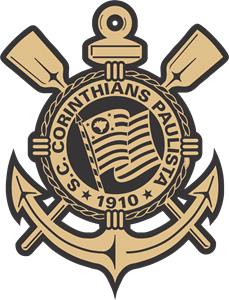

Que bom te ver por aqui, Fulano
Origem do Nome: O Sport Club Corinthians Paulista foi fundado em 1º de setembro de 1910. O nome acabou definido posteriormente, em homenagem ao time inglês Corinthian FC, que estava excursionando pelo Brasil na época.
Criação: Em 1º de setembro de 1910 um grupo de operários do bairro do Bom Retiro, localizado em São Paulo, inspirados na passagem de um time Inglês pelo Brasil, denominado Corinthian Football Club, criaram o Sport Club Corinthians Paulista.
